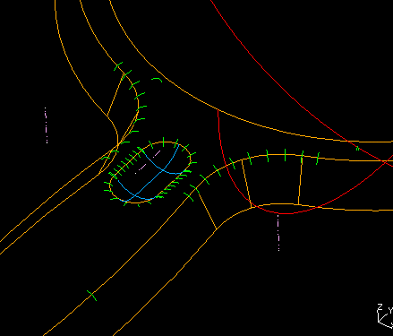
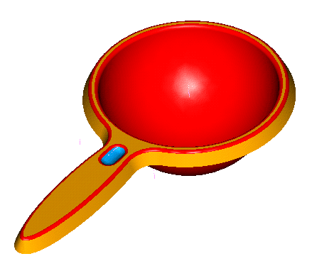

| Next Page | Previous Page | First Page |


Fillet all the edges of the top surface R4mm

Change the color of the part to be Golden_Orange


Shell the part 2mm.

Use the Cylinder primitive R2.5mm, Height 150mm
Create a Radial Pattern of the cylinder.
Radii :- 25 35 45 55
Number on Circumference 14

Ensure the Relations are ON
Cut the cylnder pattern from the colander, any top face of the rods, top face of the colander, Coincident the bowl center and the pattern reference point center.